How to draw ✍️ a rotating box 📦
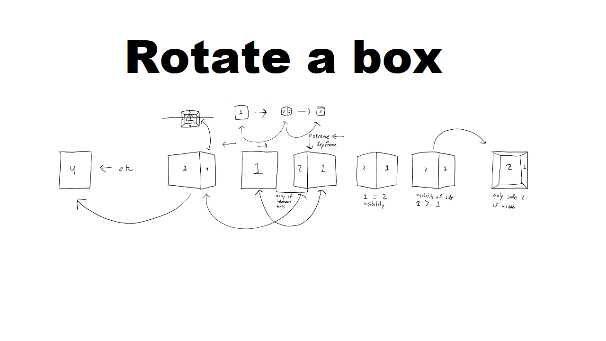
- I start off doing this by drawing two horizontal parallel lines.
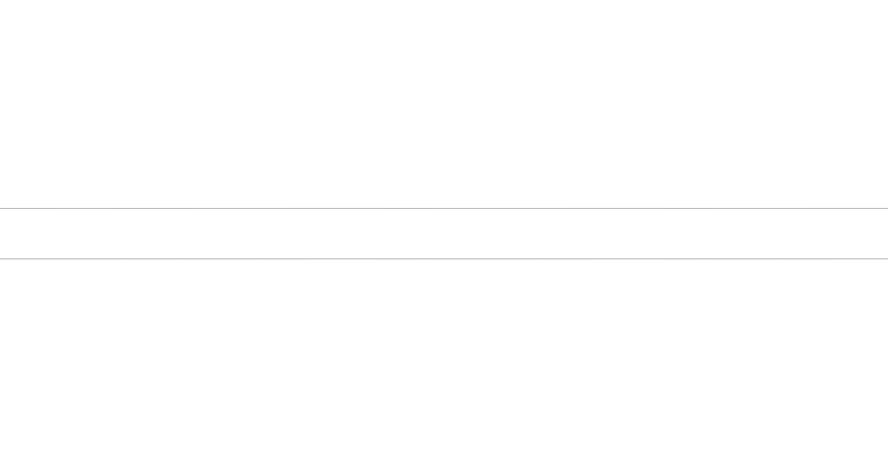
Feel free right click and download the image above. You could use if it you want to draw along with me. - Now we are going to draw a box aka a square in the center of the page.
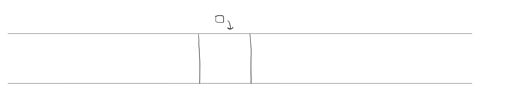
- This may seem a bit hard to visualize, but think about rotating a box a bit.
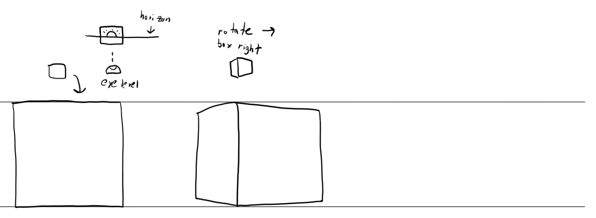
You may want to find some box in your life that you can rotate. It can help to have a reference to visualize this rotation. I don't have a mind's eye, therefore I can't picture stuff in my head. - Now we are going to rotate the box a little more. At this rotation, we can see two sides of the box.
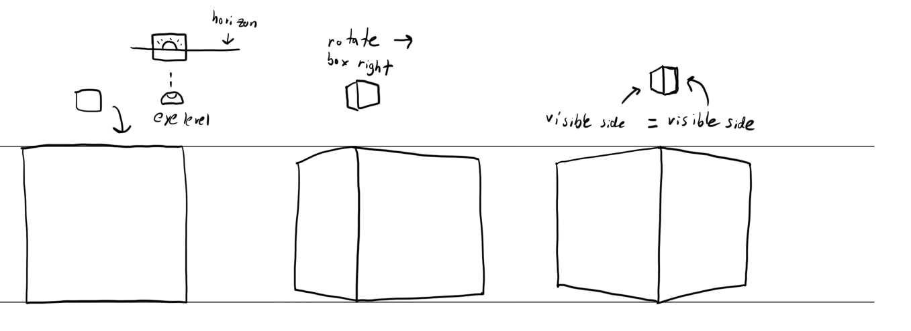
You could say that at this point, we are half way complete with rotating the box to it's other side. - Rotating a little more, our original side is less visible than our new visible side.
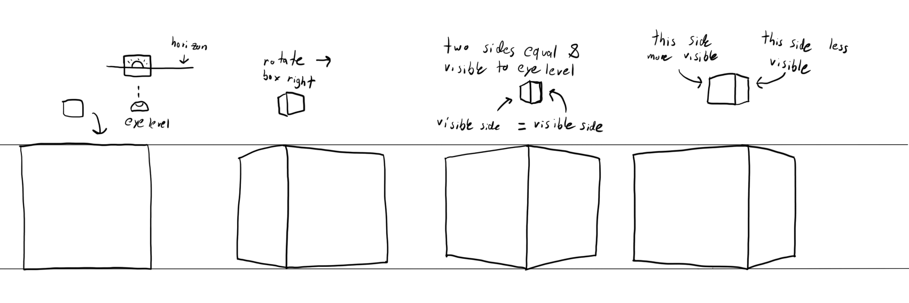
We are almost done rotating the box - Our rotation is finished. But the weird thing is that we look like we are back at the start.
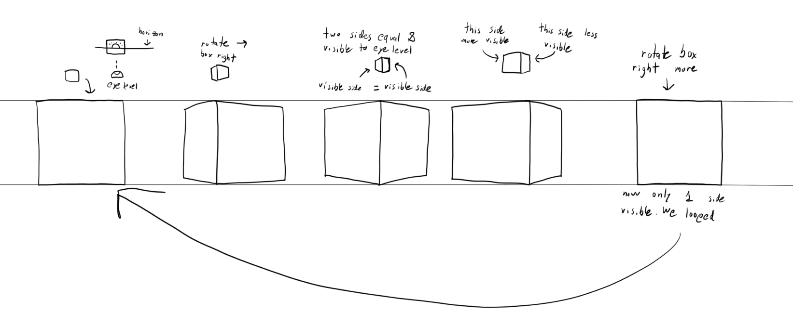
But this isn't the case. The side facing towards us now is not the original side that was facing us. In short, we rotated our box and the rotation looks like we looped back to this original side. Although this is not the case. - We could just as easily apply this to the left rotation.
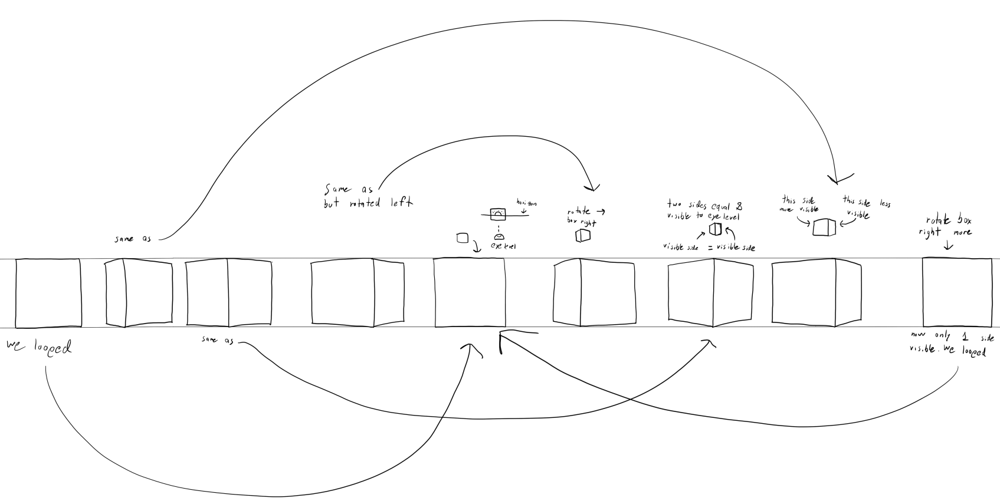
- I wanted to include a finished image here of the full rotations
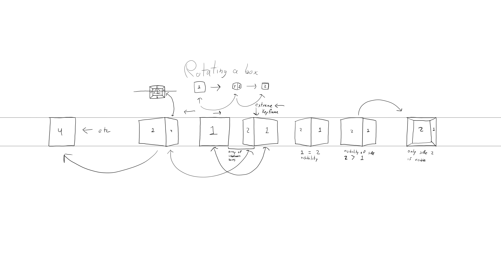
- I wanted to touch upon the fact that I did not try all possible boxes between the rotations that I drew. Yes! In-between boxes exist. You can think of this as an array of box possibilities [📦, 📦, 📦]
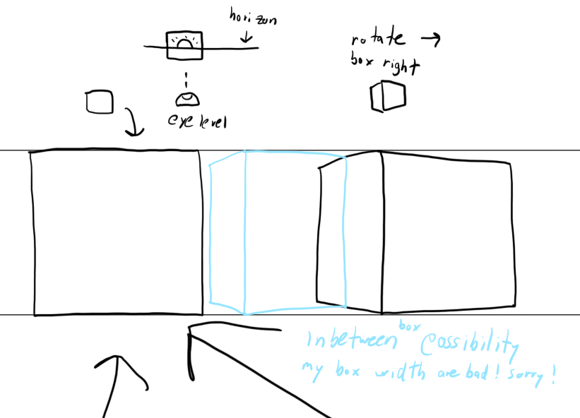
In animation, inbetweens are frames between keyframes. Keyframes are the boxes 📦 that I drew. The point of these keyframes was to show the most important rotations of the box to convey the idea. - In this picture, know that the drawn boxes are keyframes
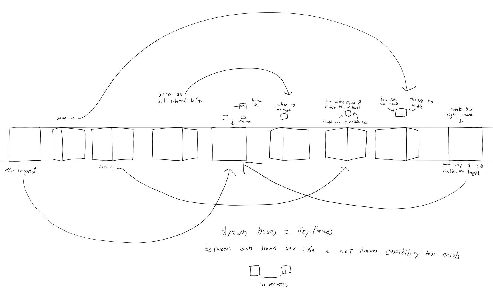
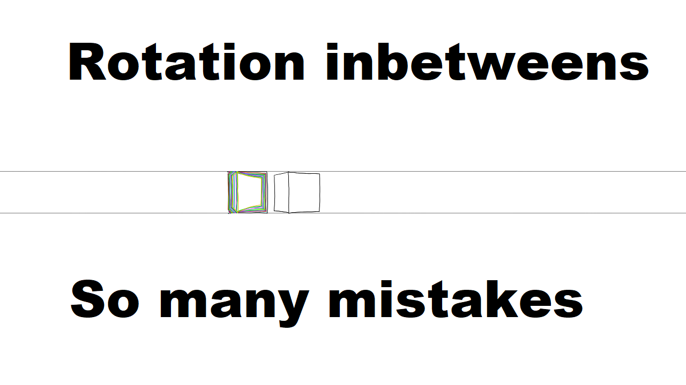
Well I hope this gives some insight into how to rotate a box in 3D space. I thought about this quite often. I feel like drawing boxes is crucial for any artists, but not much thought is given into the possibilities on how a box is rotated. Boxes should be given more thought. They are an important way to think about rotating anything in 3D space, because anything can be fitted into a box. I greatly need to learn more about how to make inbetween box rotation between keyframes of a box.
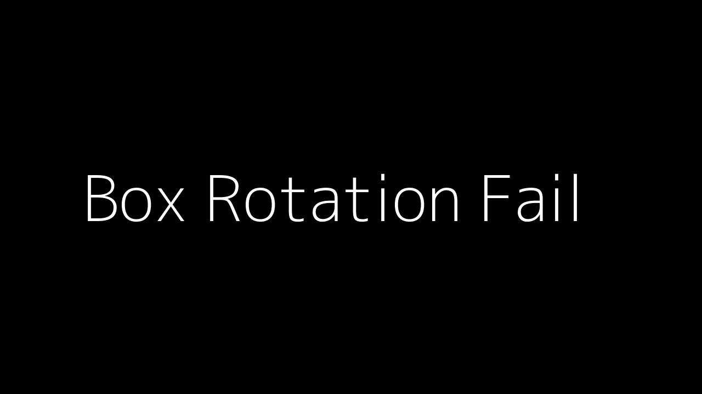